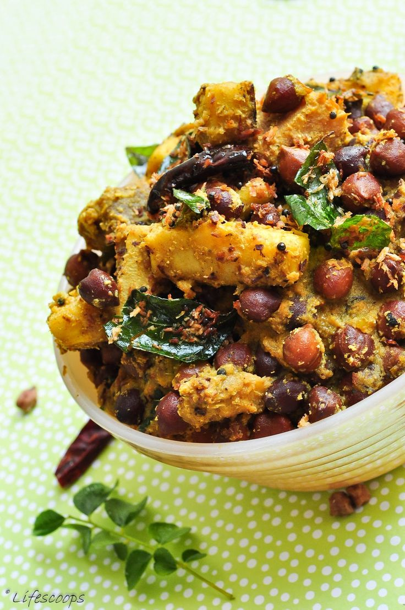

Coconut Rice
A fragrant South Indian rice dish made with freshly grated coconut, spices, and cooked rice.
Preparation Time: 10 minutes | Cook Time: 20 minutes | Total Time: 30 minutes
Serves: 4
Get Recipe
Ingredients:
2 cups cooked rice
1 cup freshly grated coconut
2 tablespoons oil
1 teaspoon mustard seeds
1 teaspoon urad dal (black gram)
1 teaspoon chana dal (split chickpeas)
2-3 dry red chilies
A pinch of asafoetida (hing)
A few curry leaves
2 tablespoons roasted peanuts (optional)
Salt to taste
Instructions:
Heat oil in a pan. Add mustard seeds and let them splutter.
Add urad dal, chana dal, dry red chilies, asafoetida, and curry leaves. Sauté until dals turn golden brown.
Add freshly grated coconut and roasted peanuts (if using). Sauté for 2-3 minutes.
Add cooked rice and salt. Mix well until all the ingredients are evenly combined.
Cover and cook on low heat for another 5-7 minutes.
Remove from heat and serve hot as a side dish or with yogurt.
Mushroom Biryani
A flavorful and aromatic rice dish made with mushrooms, basmati rice, and a blend of spices.
Preparation Time: 15 minutes | Cook Time: 30 minutes | Total Time: 45 minutes
Serves: 4
Get Recipe
Ingredients:
2 cups basmati rice, soaked for 30 minutes
200 grams mushrooms, cleaned and sliced
2 onions, thinly sliced
2 tomatoes, chopped
1/2 cup yogurt
1 tablespoon ginger-garlic paste
1 teaspoon cumin seeds
1 teaspoon garam masala
1/2 teaspoon turmeric powder
1 teaspoon red chili powder
1 bay leaf
4-5 whole cloves
4-5 whole black peppercorns
2-3 cardamom pods
A pinch of saffron strands (optional)
2 tablespoons ghee or oil
Salt to taste
Coriander leaves for garnish
Instructions:
Heat ghee or oil in a pan. Add cumin seeds, bay leaf, cloves, peppercorns, and cardamom pods. Sauté for a minute.
Add sliced onions and sauté until golden brown.
Add ginger-garlic paste and sauté until the raw smell disappears.
Add chopped tomatoes and cook until they turn soft.
Add sliced mushrooms and cook for 5-7 minutes until they release water.
Meanwhile, boil water in a separate pot. Add soaked basmati rice and cook until 70-80% done. Drain the excess water.
Add yogurt, garam masala, turmeric powder, red chili powder, and salt to the mushroom mixture. Mix well.
Add the partially cooked rice to the mushroom mixture. Cover and cook on low heat for 10-15 minutes until the rice is fully cooked and the flavors are well absorbed.
If using saffron, dissolve it in a tablespoon of warm milk and drizzle over the biryani. Garnish with coriander leaves before serving.
Rasam
A tangy and spicy South Indian soup made with tamarind, tomatoes, lentils, and a blend of aromatic spices.
Prep Time: 10 minutes | Cook Time: 20 minutes | Total Time: 30 minutes
Serves: 4
Get Recipe
Ingredients:
1/2 cup toor dal (split pigeon peas)
2 tomatoes, chopped
1 lemon-sized ball of tamarind, soaked in water
1 teaspoon rasam powder
1/2 teaspoon turmeric powder
1/2 teaspoon mustard seeds
1/2 teaspoon cumin seeds
1/2 teaspoon fenugreek seeds
2-3 dried red chilies
A pinch of asafoetida (hing)
A few curry leaves
2 tablespoons chopped coriander leaves
2 tablespoons ghee or oil
Salt to taste
Instructions:
Pressure cook toor dal until soft and mushy. Mash the dal and set aside.
Extract tamarind juice from soaked tamarind and set aside.
In a pot, heat ghee or oil. Add mustard seeds, cumin seeds, fenugreek seeds, dried red chilies, asafoetida, and curry leaves.
Add chopped tomatoes and sauté until they turn mushy.
Add tamarind extract, turmeric powder, and salt. Bring it to a boil.
Add rasam powder and mashed dal. Mix well and let it simmer for 5-7 minutes.
Turn off the heat and garnish with chopped coriander leaves.
Serve hot as a soup or with steamed rice.

Koottu Curry
A nutritious and delicious Kerala dish made with a combination of vegetables, lentils, coconut, and spices.
Prep Time: 15 minutes | Cook Time: 25 minutes | Total Time: 40 minutes
Serves: 4
Get Recipe
Ingredients:
1 cup mixed vegetables (carrot, beans, potato, pumpkin, etc.), chopped
1/2 cup yellow pumpkin, chopped
1/4 cup chana dal (split chickpeas)
1/4 cup grated coconut
1 teaspoon turmeric powder
1 teaspoon red chili powder
1/2 teaspoon mustard seeds
1/2 teaspoon cumin seeds
2-3 dry red chilies
A few curry leaves
2 tablespoons coconut oil
Salt to taste
Instructions:
Cook mixed vegetables and chana dal together until they are soft but not mushy.
Grind grated coconut, turmeric powder, and red chili powder into a fine paste.
Add the coconut paste to the cooked vegetables and dal. Mix well and simmer for a few minutes.
Heat coconut oil in a small pan. Add mustard seeds, cumin seeds, dry red chilies, and curry leaves.
Once the mustard seeds start spluttering, pour this tempering over the koottu curry.
Stir well and cook for another couple of minutes.
Remove from heat and serve hot with steamed rice.
Vazhakkai Podimas
A simple and flavorful dish made with boiled and mashed raw bananas (vazhakkai) tempered with mustard seeds, curry leaves, and spices.
Preparation Time: 15 minutes | Cook Time: 20 minutes | Total Time: 35 minutes
Serves: 4
Get Recipe
Ingredients:
2 raw bananas (vazhakkai), boiled and mashed
1 tablespoon oil
1 teaspoon mustard seeds
A few curry leaves
2 green chilies, chopped
1/2 teaspoon turmeric powder
Salt to taste
2 tablespoons grated coconut (optional)
Instructions:
Heat oil in a pan. Add mustard seeds and let them splutter.
Add curry leaves and chopped green chilies. Sauté for a minute.
Add mashed raw bananas, turmeric powder, and salt. Mix well.
Cook for 5-7 minutes on medium heat, stirring occasionally.
Optional: Garnish with grated coconut before serving.
Curd Rice
A comforting and cooling dish made with cooked rice mixed with yogurt and seasoned with mustard seeds, curry leaves, and green chilies.
Preparation Time: 10 minutes | Cook Time: 10 minutes | Total Time: 20 minutes
Serves: 4
Get Recipe
Ingredients:
1 cup cooked rice
1 cup plain yogurt (curd)
2 tablespoons milk
1 tablespoon oil
1 teaspoon mustard seeds
A few curry leaves
2 green chilies, chopped
A pinch of asafoetida (hing)
Salt to taste
Instructions:
Mix cooked rice and yogurt in a bowl. Add milk to adjust consistency if needed.
Heat oil in a small pan. Add mustard seeds and let them splutter.
Add curry leaves, chopped green chilies, and asafoetida. Sauté for a minute.
Pour the tempered mixture over the curd rice and mix well.
Adjust salt according to taste. Serve chilled or at room temperature.
Potato Fry
A simple and delicious side dish made with sliced potatoes seasoned with turmeric, red chili powder, and other spices, then pan-fried until crispy.
Preparation Time: 10 minutes | Cook Time: 20 minutes | Total Time: 30 minutes
Serves: 4
Get Recipe
Ingredients:
4 potatoes, peeled and sliced
2 tablespoons oil
1 teaspoon mustard seeds
1 teaspoon cumin seeds
1/2 teaspoon turmeric powder
1 teaspoon red chili powder
Salt to taste
Instructions:
Heat oil in a pan. Add mustard seeds and let them splutter.
Add cumin seeds and sliced potatoes. Mix well.
Add turmeric powder, red chili powder, and salt. Stir to coat the potatoes evenly.
Cover and cook on medium heat for about 15-20 minutes or until the potatoes are cooked through and crispy, stirring occasionally.
Serve hot as a side dish with rice or roti.
Tomato Rice
A flavorful South Indian rice dish made with cooked rice, tomatoes, and a blend of spices, often served as a quick lunch or dinner option.
Preparation Time: 10 minutes | Cook Time: 20 minutes | Total Time: 30 minutes
Serves: 4
Get Recipe
Ingredients:
2 cups cooked rice
2 tomatoes, finely chopped
1 onion, finely chopped
2 green chilies, slit
1 teaspoon ginger-garlic paste
1/2 teaspoon mustard seeds
1/2 teaspoon cumin seeds
A pinch of asafoetida (hing)
1/2 teaspoon turmeric powder
1 teaspoon red chili powder
1 teaspoon coriander powder
Salt to taste
2 tablespoons oil
Few curry leaves
2 tablespoons chopped coriander leaves for garnish
Instructions:
Heat oil in a pan. Add mustard seeds and let them splutter.
Add cumin seeds, asafoetida, and curry leaves. Sauté for a minute.
Add chopped onions and slit green chilies. Sauté until onions turn translucent.
Add ginger-garlic paste and sauté until raw smell disappears.
Add chopped tomatoes and cook until they turn soft and mushy.
Add turmeric powder, red chili powder, coriander powder, and salt. Mix well.
Add cooked rice and mix gently until well combined.
Cover and cook for a few minutes on low heat until the flavors are absorbed.
Garnish with chopped coriander leaves before serving.
Mor Kolambu
A South Indian yogurt-based curry made with a blend of spices and vegetables, giving it a tangy and flavorful taste.
Preparation Time: 15 minutes | Cook Time: 20 minutes | Total Time: 35 minutes
Serves: 4
Get Recipe
Ingredients:
1 cup plain yogurt (curd)
1 tablespoon chickpea flour (besan)
1/2 teaspoon turmeric powder
1/2 teaspoon mustard seeds
1/2 teaspoon cumin seeds
2 dried red chilies
A few curry leaves
1/2 cup mixed vegetables (carrot, beans, potato), chopped
2 cups water
Salt to taste
Coriander leaves for garnish
Instructions:
In a bowl, whisk together yogurt, chickpea flour, turmeric powder, and salt. Set aside.
Heat oil in a pan. Add mustard seeds and let them splutter.
Add cumin seeds, dried red chilies, and curry leaves. Sauté for a minute.
Add mixed vegetables and sauté for 2-3 minutes.
Reduce the heat to low. Pour the yogurt mixture into the pan and mix well.
Add water and simmer for 10-12 minutes, stirring occasionally, until the vegetables are cooked and the gravy thickens.
Garnish with coriander leaves before serving.
Keerai Masiyal
A nutritious South Indian dish made with mashed greens (spinach or amaranth leaves) tempered with garlic, cumin, and green chilies.
Preparation Time: 10 minutes | Cook Time: 15 minutes | Total Time: 25 minutes
Serves: 4
Get Recipe
Ingredients:
4 cups spinach or amaranth leaves, washed and chopped
3 cloves garlic, minced
2 green chilies, chopped
1/2 teaspoon cumin seeds
1 tablespoon oil
Salt to taste
Instructions:
Boil the chopped greens in water until they are soft and cooked.
Drain the excess water and mash the greens using a potato masher or the back of a spoon.
Heat oil in a pan. Add cumin seeds and let them splutter.
Add minced garlic and chopped green chilies. Sauté for a minute.
Add the mashed greens and salt. Mix well and cook for 2-3 minutes.
Remove from heat and serve hot with rice or roti.
Kathirikai Gosthu
A traditional South Indian gravy made with brinjal (eggplant), tamarind, and spices, typically served with rice or idli.
Preparation Time: 15 minutes | Cook Time: 25 minutes | Total Time: 40 minutes
Serves: 4
Get Recipe
Ingredients:
4 small brinjals (eggplants), chopped
1 lemon-sized ball of tamarind, soaked in water
1 onion, finely chopped
2 tomatoes, finely chopped
1 teaspoon mustard seeds
1 teaspoon cumin seeds
1/2 teaspoon turmeric powder
1 teaspoon sambar powder
A pinch of asafoetida (hing)
A few curry leaves
2 tablespoons oil
Salt to taste
Coriander leaves for garnish
Instructions:
Extract tamarind juice from the soaked tamarind and set aside.
Heat oil in a pan. Add mustard seeds and let them splutter.
Add cumin seeds, asafoetida, and curry leaves. Sauté for a minute.
Add chopped onions and sauté until they turn translucent.
Add chopped tomatoes and cook until they turn soft.
Add chopped brinjals, turmeric powder, sambar powder, and salt. Mix well.
Add tamarind juice and water. Cover and cook until the brinjals are tender.
Garnish with coriander leaves before serving.
Milagu Kolambu
A spicy and tangy South Indian gravy made with black pepper, tamarind, and spices, usually served with rice or idli.
Preparation Time: 10 minutes | Cook Time: 20 minutes | Total Time: 30 minutes
Serves: 4
Get Recipe
Ingredients:
1 lemon-sized ball of tamarind, soaked in water
1 onion, finely chopped
2 tomatoes, finely chopped
2 teaspoons black peppercorns
1 teaspoon cumin seeds
1/2 teaspoon fenugreek seeds
1/2 teaspoon turmeric powder
1 teaspoon sambar powder
1/2 teaspoon mustard seeds
A pinch of asafoetida (hing)
A few curry leaves
2 tablespoons oil
Salt to taste
Coriander leaves for garnish
Instructions:
Extract tamarind juice from the soaked tamarind and set aside.
Dry roast black peppercorns, cumin seeds, and fenugreek seeds until fragrant. Grind into a fine powder.
Heat oil in a pan. Add mustard seeds and let them splutter.
Add chopped onions and sauté until they turn translucent.
Add chopped tomatoes and cook until they turn soft.
Add turmeric powder, sambar powder, ground pepper-cumin-fenugreek powder, and salt. Mix well.
Add tamarind juice and water. Cover and simmer until the gravy thickens.
Garnish with coriander leaves before serving.